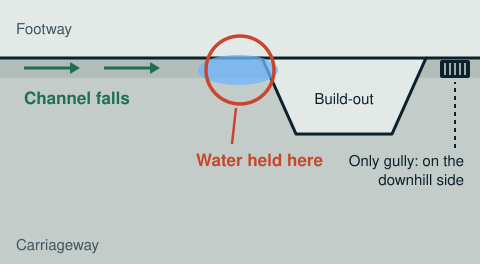
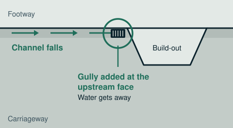

Case study · Drainage design audit
22 missing road gullies found before a single kerb was laid
A national housebuilder's 200-300 plot scheme. The road levels looked right and the drainage looked right, but where kerb build-outs crossed falling channels, water had nowhere to go. We found it on the drawings, so it never had to be dug out of a finished road.

In short: a Dimensure Design Audit of the road and drainage drawings for a 200-300 plot housing scheme found 22 places where water would stand against kerb build-outs and pinch points. Each needed a gully that wasn't on the drawings. Adding them at design stage avoided an estimated £99,000 of retrofit work if they had been found after the road was surfaced, which is when ponding usually shows up at the pre-adoption inspection.
The site
A 200-300 plot residential development for a national housebuilder, with adoptable estate roads, shared surfaces, build-outs and pinch points for traffic calming, and a mix of macadam and block-paved lengths. The engineer's drawing package had been issued and the groundworks were about to start on the roads.
What we were asked to do
Check the road and drainage drawings for anything that would cause problems on site, before it was built. We traced every road channel from its high point to an outlet, and checked every point where the kerb line changes for a gully on its uphill side.
What we found
The road levels, read on their own, looked fine. The drainage layout, read on its own, looked fine. The problem only appeared when the kerb and surfacing layout was laid over the drainage layout and the channel falls were followed through each kerb feature.
Time and again, a kerb build-out or pinch point sat across a channel that was falling towards it, with the nearest gully on its downhill side, or no gully at all. Water running along the channel would hit the face of the build-out and stop. On the first drawing sheet we reviewed, that meant four new gullies. Across the rest of the site, a further eighteen.
The numbers
- Scheme
- 200-300 plots
- Client
- National housebuilder
- Service
- Dimensure Design Audit
- Gullies added
- 22 (4 + 18)
- Audit fee
- £1,800
- Potential saving
- £99,000
The same problem, 22 times
A simplified plan of one location, redrawn so the site can't be identified.


Where a build-out or pinch point sits across a falling channel, the low point is the corner against its upstream face. A gully a metre or two away, or round the other side, doesn't help. The same check covers ramps, raised tables, junction corners, dropped crossings and turning heads.
What it would have cost to fix later
Without the audit, these gullies would have been found the usual way: standing water after rain, on a finished road.
- Audit feefound on the drawings
- After binderbefore surfacing
- After surfacingat pre-adoption inspection
- After occupationhomes sold and lived in
Net potential saving for 22 gullies at each stage, after taking off what the gullies cost to include at design stage.
| Found at | What the retrofit involves | Per gully | Gross, 22 gullies | Net saving | Return on fee |
|---|---|---|---|---|---|
| Design stage (what happened) | Gully, grate and lead laid with the rest of the drainage | £800 | £17,600 | - | - |
| After binder | Saw-cut and break out binder, lift kerbs, trench about 10 m to a manhole, core and connect, new gully pot and grate, backfill, re-lay kerbs, reinstate binder | £2,600 | £57,200 | £39,600 | 22x |
| After surfacing | All of the above, plus cutting the surface course, an inlay panel to meet the adoption spec and a return visit from the surfacing gang | £5,300 | £116,600 | £99,000 | 55x |
| After occupation | All of the above, plus traffic management, working around parked cars and residents' access, and slower progress | £7,300 | £160,600 | £143,000 | 79x |
How the figures are worked out: net saving = (retrofit cost per gully - £800 design-stage cost) x 22 gullies. Return on fee = net saving ÷ £1,800, rounded down. All costs are estimates based on typical 2026 UK rates for labour, plant, materials, surfacing and traffic management, for a gully with a lead of about 10 m to a manhole. They are not quotes, exclude VAT, and do not include programme delay, the cost of a bond held for longer, or delay to section 38 adoption, all of which would usually add to the total.
Why this gets missed
A missing gully at a build-out isn't a careless mistake. The engineering layout, the kerb and surfacing layout and the drainage layout are often drawn at different times and checked on their own. Each one can be right, and the three together can still leave water with nowhere to go.
Checking levels doesn't catch it, because the levels are right. Counting gullies doesn't catch it, because there are plenty. It only shows up when someone follows the water: from the high point of each channel, through every kerb feature, to the gully it actually reaches.
Why it matters to the bottom line
On a finished road, one missing gully means breaking out kerbs and new surfacing, trenching back to a manhole and reinstating to a standard the adopting authority will accept. Across a whole site, that becomes a five or six-figure cost, a return visit from the surfacing gang, and an adoption sign-off that slips while it is put right. On the drawing, it is a revision.
What the audit checked on every road
- Every channel traced from its high point to an outlet.
- Every build-out, pinch point, ramp, table and junction corner checked for a gully on its uphill side.
- Kerb and surfacing layout laid over the drainage layout and levels.
- Turning heads and dead ends checked for a single point of failure.
- Every issue logged with its location, the levels, a suggested fix and a query for the designer to confirm.
What happened next
The findings went to the design team as queries for them to review, and the gullies were added to the drawings before construction. Because the fix was made on paper, nothing had to be broken out.
The client and site are not named, for confidentiality. The plan above is a simplified redrawing, not the project drawing. Savings are potential savings based on estimated retrofit costs; the work they relate to was never needed.
Questions we get asked
Why do kerb build-outs cause standing water on new estate roads?
A build-out pushes the kerb line out into the carriageway, so it sits across the line of the channel. If the channel is falling towards it and the nearest gully is past the build-out, on its downhill side, water running along the channel meets the face of the build-out and has nowhere to go. The road levels on their own look fine; the problem only shows when the kerb layout is checked against the drainage layout and the channel falls together.
How much does it cost to add a road gully after the road is built?
On a new estate road, our estimate is around £2,600 per gully if it is added after the binder course, around £5,300 once the surface course is down, and around £7,300 once homes are occupied, for a gully with a lead of about 10 metres back to a manhole. The same gully drawn in at design stage costs roughly £800, laid with the rest of the drainage. These are estimates from typical 2026 UK rates, not quotes; your own rates, connection lengths and adoption requirements will move them.
Why are the savings in this case study described as potential savings?
Because the problem was fixed on the drawings before anything was built, so the retrofit never happened and there is no invoice to point to. The figures show what the 22 gullies would likely have cost to retrofit, less what they cost to include at design stage. They are estimates, and they don't include programme delay or the cost of holding back adoption, which would usually add to them.
Is a missing gully a design error?
Not always. Drawings are produced by different people at different times, and an engineering layout, a kerb layout and a drainage layout can each be right on their own while not agreeing with each other. That is exactly the gap a design audit looks at. We report what we find and suggest a likely fix; the designer reviews it and issues any change.
Can you check our drawings for the same problem?
Yes. Every Dimensure Design Audit follows every road channel from its high point to an outlet and checks every build-out, pinch point, ramp, table, junction corner and turning head for a gully where the water actually ends up. Send the drawing package and we will confirm a fixed price.
Book a scan or ask a question
Send the drawing, the location and when you need it. We reply the same working day with a fixed price.